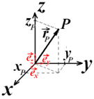

Кинематика изучает способы описания движения, не вдаваясь в причины, его порождающие. ЧТО? ГДЕ? КОГДА? – это вопросы кинематики.
Интерес к кинематике возрос с расширением применения пороха (с XIII в. в Европе и России).
Галилей в 1600 г. заново изложил основы баллистики, согласующиеся с практикой для тяжёлых ядер, летящих с малой скоростью.
Галилею принадлежит принцип относительности: движение относительно, то есть понятие абсолютного движения в абсолютном пространстве лишено содержания. Для описания движения необходимо выбрать систему отсчёта.
Галилею принадлежит принцип относительности: движение относительно, то есть понятие абсолютного движения в абсолютном пространстве лишено содержания. Для описания движения необходимо выбрать систему отсчёта.
\[ \left.\begin{matrix} \text{d}_{\text{Земли}} = 1.24 \times 10^{7} \, \text{м} = 12.4 \times 10^{3} \, \text{км}\\ \text{i}_{\text{Солнце-Земля}} = 1.50 \times 10^{11} \, \text{м} = 150 \times 10^{6} \, \text{км}\\ \text{d}_{\text{Солнца}} = 1.5 \times 10^{6} \, \text{км} \end{matrix}\right\} \quad i_{\text{Солнце-Земля}} \gg d_{\text{Солнца}} \gg d_{\text{Земли}} \]
Галилею принадлежит принцип относительности: движение относительно, то есть понятие абсолютного движения в абсолютном пространстве лишено содержания. Для описания движения необходимо выбрать систему отсчёта.
Число независимых величин, которые нужно задать, чтобы определить конфигурацию системы, то есть взаимное расположение всех частей этой системы в пространстве в любой момент времени, называется числом степеней свободы этой системы.
У материальной точки нет частей, и в нашем трёхмерном пространстве она имеет три степени свободы. Следовательно, для описания её движения в пространстве нужна система координат, задающая три независимые переменные
Наиболее часто используемые системы координат: декартова, цилиндрическая и сферическая.
Системы координат.

Правая система: поворачиваем винт или буравчик с правой резьбой (любая шариковая ручка)
в плоскости \( (x, y) \)
по кратчайшему пути от \( x \) к \( y \) и по поступательному движению винта
получаем направление \( z \).
Три независимых параметра точки \( P \) суть координаты этой точки \( (x_P, y_P, z_P) \) по соответствующим осям.
Радиус-вектор точки \( P \), определяющий её положение в пространстве,
\( \vec{r}_P = x_P \vec{e}_x + y_P \vec{e}_y + z_P \vec{e}_z \).
\( \{ \vec{e}_x, \vec{e}_y, \vec{e}_z \} \) – базис декартовой системы координат состоит из
единичных векторов, направленных вдоль осей системы. Разложение
любого вектора по базису единственно.
Радиус-вектор \( \vec{r}_P \) записывается как \( \vec{r}_P = \rho \cos \varphi \vec{e}_x + \rho \sin \varphi \vec{e}_y + z \vec{e}_z \).
Выбор системы координат определяется симметрией задачи.
Траекторией называют линию, которую описывает движущаяся материальная точка в пространстве. Чтобы найти положение точки в любой момент времени, нужно задать её координаты \(x(t)\), \(y(t)\), \(z(t)\). Эти три уравнения и составляют уравнение движения точки.
Перемещением точки за некоторый промежуток времени называют вектор, проведённый из начального положения точки в её конечное положение.
Модуль перемещения называется путём, пройденным точкой за данный промежуток времени. Если точка движется по кривой, то путь равен длине этой кривой от начального до конечного положения точки.
Скоростью называют векторную величину, равную производной радиус-вектора точки по времени:
\[ \vec{v} = \frac{d\vec{r}}{dt} \]
Мгновенной скоростью точки в данный момент времени называют скорость точки в данной точке траектории.
Ускорением называют векторную величину, равную производной скорости по времени:
\[ \vec{a} = \frac{d\vec{v}}{dt} \]
Ускорение точки может быть направлено по касательной к траектории движения (тангенциальное ускорение) и по нормали к траектории (нормальное ускорение).
1) Векторный
Задана зависимость \( \mathbf{r}(t) \), то есть геометрическое место точек концов радиуса-вектора суть траектория. Тогда скорость и ускорение определяются следующим образом:
\[ \mathbf{v} = \frac{d\mathbf{r}}{dt}, \quad \mathbf{a} = \frac{d^2\mathbf{r}}{dt^2} \]
2) Координатный
Заданы временные зависимости координат частицы в декартовой системе \( x(t), y(t), z(t) \). Тогда:
\[ \mathbf{r} = x(t)\mathbf{e}_x + y(t)\mathbf{e}_y + z(t)\mathbf{e}_z \]
\[ \mathbf{v} = \dot{x}(t)\mathbf{e}_x + \dot{y}(t)\mathbf{e}_y + \dot{z}(t)\mathbf{e}_z \]
\[ \mathbf{a} = \ddot{x}(t)\mathbf{e}_x + \ddot{y}(t)\mathbf{e}_y + \ddot{z}(t)\mathbf{e}_z \]
3) Естественный
Пусть задана траектория и положение на ней частицы в любой момент времени. Такой способ – естественный, так как в любой момент времени существует своя система координат, один из ортов которой совпадает с направлением движения, то есть с направлением скорости.